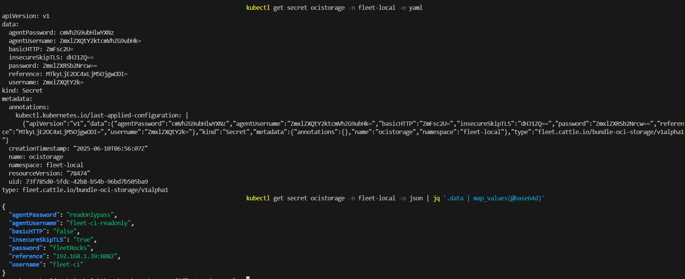

Stockage OCI
SUSE® Rancher Prime Continuous Delivery stocke par défaut les ressources de bundle Kubernetes dans etcd. Cependant, etcd a des limites de taille strictes et n’est pas optimisé pour de grandes charges de travail. Si vos ressources de bundle dépassent les limites de taille d’etcd dans le cluster cible, envisagez d’utiliser un registre OCI comme backend de stockage.
|
Pour réduire la taille du bundle, compressez et encodez en base64 le contenu du bundle avant de le télécharger sur le registre OCI. |
Utiliser un registre OCI vous aide à :
-
Réduire la charge d’etcd en déchargeant le contenu volumineux du bundle.
-
Utiliser un backend de stockage standardisé pour de grands manifests ou des charts Helm.

|
SUSE® Rancher Prime Continuous Delivery vérifie l’intégrité des artefacts OCI et étiquette les artefacts OCI comme |
Conditions préalables
-
Un registre OCI en cours d’exécution.
-
Un secret Kubernetes avec des identifiants valides.
-
Une installation de SUSE® Rancher Prime Continuous Delivery (v2.12.0 ou ultérieure).
Comment activer le stockage OCI
Pour activer le stockage OCI, créez un secret qui inclut les informations nécessaires et les options d’accès pour le registre OCI. Il existe deux façons de définir des secrets :
-
Secret global : Un secret exactement nommé
ocistoragedans le même espace de noms que vos `GitRepo`s.-
Ceci est le secret de secours. Si aucun secret de niveau
GitRepon’est spécifié, SUSE® Rancher Prime Continuous Delivery utilise ce secret pour tous lesGitRepodans l’espace de noms.
-
-
Secret de niveau GitRepo: Un secret personnalisé pour des ressources
GitRepospécifiques.-
Ceci est un secret défini par l’utilisateur qui peut avoir n’importe quel nom et doit être référencé dans la ressource
GitRepo. -
Définissez le champ
ociRegistrySecretdans la spécificationGitRepoau nom du secret.
-
|
SUSE® Rancher Prime Continuous Delivery ne se rabat pas sur etcd si le secret est manquant ou invalide. Au lieu de cela, il enregistre une erreur et saute le déploiement. |
Créez un Secret Kubernetes qui contient l’adresse du registre et des identifiants optionnels :
apiVersion: v1
kind: Secret
metadata:
name: ocistorage
namespace: fleet-local
type: fleet.cattle.io/bundle-oci-storage/v1alpha1
data:
reference: <base64-encoded-registry-url> # Only the reference field is required. All other fields are optional.
username: <base64-encoded-user>
password: <base64-encoded-password>
insecureSkipTLS: <base64-encoded-true/false>
basicHTTP: <base64-encoded-true/false>
agentUsername: <base64-encoded-readonly-user>
agentPassword: <base64-encoded-password>|
Le secret doit avoir le type : |
Changer le secret ne déclenche pas un redéploiement. SUSE® Rancher Prime Continuous Delivery utilise le nouveau registre uniquement après une mise à jour Git ou une mise à jour manuelle forcée.
Référence du champ Secret
Les champs que vous pouvez configurer sont :
| Champ | Description | Format | Notes |
|---|---|---|---|
|
URL du registre OCI. |
Chaîne encodée en Base64 |
N’utilisez pas de préfixes comme |
|
Nom d’utilisateur avec accès en écriture au registre. |
Chaîne encodée en Base64 |
Si non spécifié, SUSE® Rancher Prime Continuous Delivery accède au registre sans authentification. |
|
Mot de passe pour l’utilisateur avec accès en écriture. |
Chaîne encodée en Base64 |
Si non spécifié, SUSE® Rancher Prime Continuous Delivery accède au registre sans authentification. |
|
Nom d’utilisateur en lecture seule pour les agents. |
Chaîne encodée en Base64 |
Utilisez des identifiants en lecture seule pour les agents afin d’améliorer la sécurité. Si vous ne définissez pas ces identifiants, l’agent utilise le nom d’utilisateur. |
|
Mot de passe en lecture seule pour les agents. |
Chaîne encodée en Base64 |
Utilisez des identifiants en lecture seule pour les agents afin d’améliorer la sécurité. Si vous ne définissez pas ces identifiants, l’agent utilise le mot de passe utilisateur. |
|
Ignore la validation du certificat TLS. |
codé en Base64 |
À utiliser uniquement pour le développement ou les tests. Par défaut, |
|
Active HTTP au lieu de HTTPS. |
codé en Base64 |
Non recommandé. Permet le trafic non sécurisé. Par défaut, |
SUSE® Rancher Prime Continuous Delivery Exemple
Considérez le GitRepo fichier suivant :
apiVersion: fleet.cattle.io/v1alpha1
kind: GitRepo
metadata:
name: frontend-oci
namespace: fleet-local
spec:
repo: https://github.com/your-org/fleet-oci-example.git
branch: main
paths:
- ./frontend
ociRegistrySecret: ocistorageVous pouvez soit créer et appliquer un fichier YAML contenant l’adresse du registre et des identifiants optionnels similaires à l’exemple ci-dessus. Ensuite, exécutez :
kubectl apply -f secrets/oci-secret.yamlOu vous pouvez utiliser kubectl pour créer le secret en utilisant du texte non encodé. Kubernetes convertira automatiquement les valeurs en base64.
kubectl -n fleet-local create secret generic ocistorage \
--type=fleet.cattle.io/bundle-oci-storage/v1alpha1 \
--from-literal=username=fleet-ci \
--from-literal=password=fleetRocks \
--from-literal=reference=192.168.1.39:8082 \
--from-literal=insecureSkipTLS=true \
--from-literal=basicHTTP=false \
--from-literal=agentUsername=fleet-ci-readonly \
--from-literal=agentPassword=readonlypassPour valider votre secret, exécutez :
kubectl get secret ocistorage -n fleet-local -o yamlPour déchiffrer et afficher votre secret :
kubectl get secret ocistorage -n fleet-local -o json | jq '.data | map_values(@base64d)'